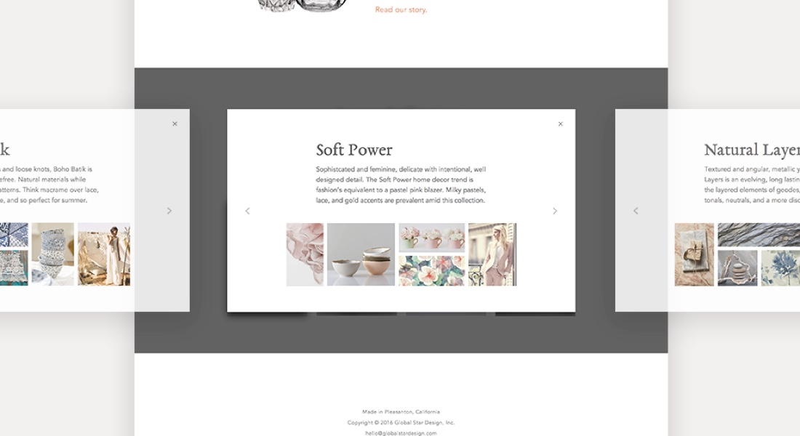
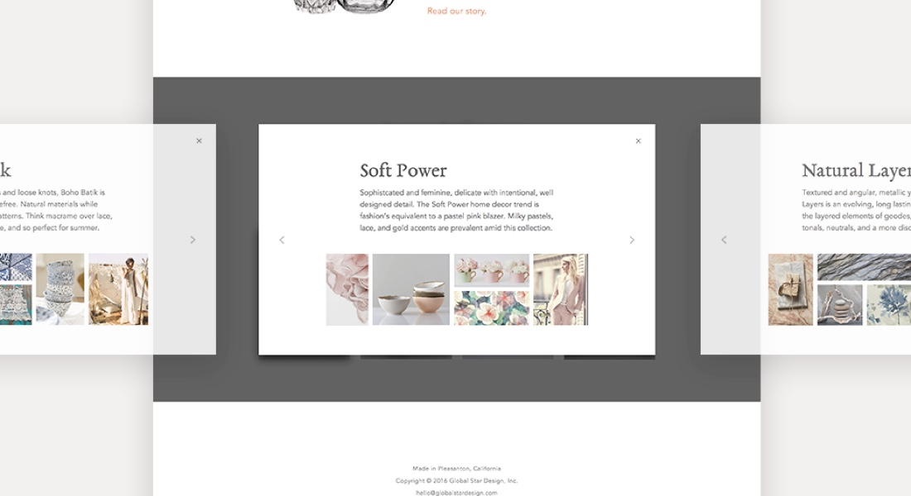

{{ page.title }}
UX/UI
The GSD site is something I’ve wanted to update for quite a while. Cycling through seasons, however, was crucial to helping me better understand the problems that needed to be addressed. In the static pages of the site, I am aiming to clearly note what we do, the items we encompass in our product line,
who we are, who we serve, and touch on trends that inspire us. In our competitive market, I wanted
to ensure a solid visual feel for our products without sharing too many designs. The in progress catalog portion will include our entire line, but will only be viewable by customers. See it live at globalstardesign.com
to ensure a solid visual feel for our products without sharing too many designs. The in progress catalog portion will include our entire line, but will only be viewable by customers. See it live at globalstardesign.com
 
